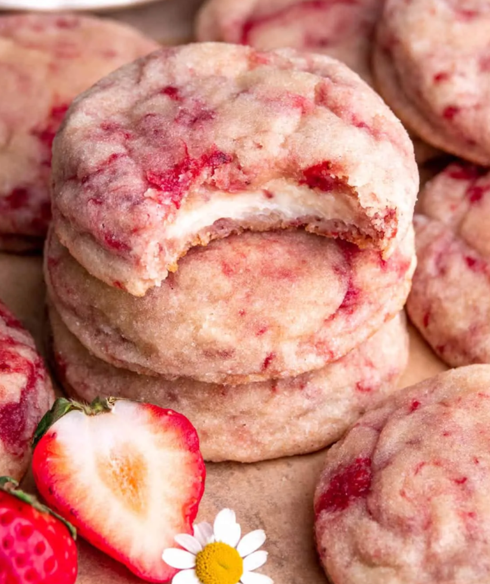

Strawberry Cheesecake Cookies
These perfect strawberry cheesecake cookies are soft and chewy sugar cookies, with jammy strawberries throughout, stuffed with a creamy vanilla cheesecake filling. They're chewy, buttery, full of fresh strawberry flavor and taste just like strawberry cheesecake in cookie form!

Ingredients
For the Cheesecake Filling:
- 6 oz (170 g) cream cheese, cold
- 3 tbsp (38 g) granulated white sugar
- 1/2 tsp vanilla
For the Strawberry Jam:
- 12 oz (340 g) fresh strawberries, hulled and finely diced
- 1/4 cup (50 g) granulated white sugar
For the Cookie Dough:
- 2 3/4 cups (344 g) all purpose flour, spooned and leveled
- 1/2 tsp baking powder
- 1/2 tsp baking soda
- 1/2 tsp salt
- 1 cup (200 g) granulated white sugar
- 1 cup (227 g) unsalted butter, very softened
- 1 egg, at room temperature
- 2 tsp vanilla
- 1/4 cup (50 g) granulated white sugar, for rolling dough in
Baking Instructions
1. Cheesecake Filling
- Line a small cookie sheet with parchment paper.
- Add the cream cheese, sugar and vanilla to a small bowl. Mix on medium-high speed with an electric mixer until fluffy and the sugar has dissolved, about 2 minutes.
- Scoop the cheesecake filling into 20, 2 tsp portions onto the baking sheet. Slightly flatten each scoop with the back of a spoon so each resembles a thick disc rather than a scooped ball.
- Pop them into the freezer until completely frozen.
2. Strawberry Jam
- Add the diced strawberries and sugar to a medium pot over medium heat.
- Cook for about 45 minutes, smashing half way through with a wooden spoon. Be sure to stir continuously towards the end of the time as the jam will start sticking to the bottom of the pan as it gets thicker. The strawberry jam should be very thick and reduced to a heaping 1/3 cup (80 ml).
- Remove from the heat and pop in the fridge to chill while working on the dough.
3. Cookie Dough & Assembly
- Preheat the oven to 350℉ (175℃). Line two baking sheets with parchment paper.
- In a medium bowl, whisk together the flour, baking powder, baking soda and salt. Then set aside the flour mixture.
- In a large bowl cream the softened butter and granulated sugar together with an electric hand mixer on high speed until fluffy, about 2 minutes.
- Add in the egg and vanilla and mix on medium speed until pale in color and very fluffy, about 1-2 minutes.
- Add in the dry ingredients. Mix on low speed just until combined.
- Push 3/4 of the dough to the side of the bowl. Flatten out 1/4 of the dough on the bottom of the bowl. Spoon 1/4 of the jam onto that section of dough. Add 1/4 of the dough on top of that section and spoon 1/4 of the jam on top. Repeat twice more to evenly disperse the jam.
- "Cut" the dough in quarters with a rubber spatula and fold each section of dough just until the jam is slightly folded in. Don't mix the jam in all the way; leave little pockets of jam throughout.
- Scoop the dough into 20 portions with a 2 tbsp cookie scoop. Slightly flatten out each then place a frozen cheesecake disc in the center. Close the cheesecake in with the cookie dough, making sure it is completely covered, and shape into a slightly flattened disc.
- Roll the cookie dough in sugar.
- Transfer the cookie dough to a prepared baking sheet. Bake 6 cookies at a time for 11-12 minutes.
- Let the cookies cool for about 10 minutes on the cookie sheet, then transfer the baked cookies to a cooling rack to cool completely. Then serve!